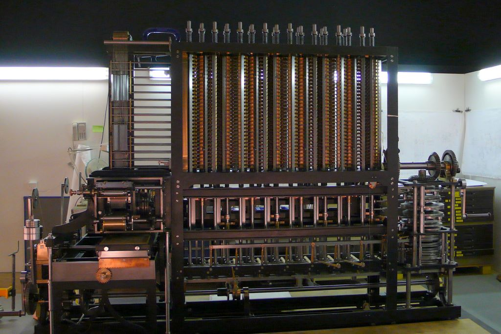

1 / 2
Фото превью
Механические вычислители
Разностная машина Бэббиджа
Механические вычислители • 1822
Бэббиджпроект
Период
1822
Зал
HALL2
Технология
Бэббидж

В 1822 году английский математик Чарльз Бэббидж начал разработку своей разностной машины, вдохновлённый идеей автоматизации сложных математических вычислений. Целью было создание механического устройства, способного вычислять полиномиальные функции, что было особенно полезно для астрономических и навигационных расчетов. Эта машина должна была уметь вычислять значения многочленов до шестой степени с точностью до 18-го знака. Несмотря на амбициозность проекта и поддержку со стороны Королевского общества, Бэббидж столкнулся с техническими трудностями и финансовыми проблемами, что привело к тому, что машина так и не была полностью построена при его жизни. Тем не менее, его идеи оказали глубокое влияние на развитие вычислительной техники, и в 1991 году был по чертежам была построена рабочая копия Разностной машины Бэббиджа, которая по сей день находится в Музее Науки в Лондоне.
Принцип работы основан на методе конечных разностей, который позволяет вычислять значения полиномиальных функций с помощью последовательных операций сложения, без использования умножения и деления. Машина хранит значения функции и её разностей в отдельных механических колонках и при каждом шаге добавляет разности друг к другу, получая новое значение функции. Благодаря системе шестерёнок и валов вычисления выполняются автоматически.
Работа Разностной машины - YouTube